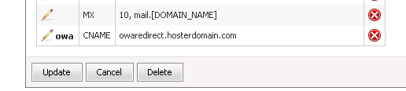

Tuning OWA redirection in WSP HES environment
Translations:
ASSUMPTIONS.
Here we will add examples assuming that:
- Our example hosting company DNS domain "hosterdomain.com".
- We use single SSL certificate for all Exchange services and use one common name - "mail.hosterdomain.com".
- Special IP for OWA redirect site - 10.0.0.2.
- Also we assume that it is default Exchange installation and all web-based Exchange services (Autodiscover, OA, OWA, OAB distribution, etc) are deployed under Default Web Site.
Steps to deploy OWA redirection:
-
Get additional Internet (or Client Access Network, if you use NAT-based network) IP address for Client Access Server. It should be dedicated IP address, not the same used for Autodiscover redirect site.
-
Configure the IP address for the default Web site. Configure Default Web Site to use one IP address, not "all Unassigned". This address should not be used nether by Autodiscover redirect site, no by OWA redirect site which we will create in next steps.
-
Create new web site, name it OWA Redirect. Use separate IP address (which does not used for Default Web Site and for Autodiscover redirect site), port 80. Don't use host headers. Create C:\Inetpub\OWA_redirect directory and use it for this site home directory. Accept all other default setting of new web site creation wizard
-
Go to "OWA Redirect" website properties and set redirection to your OWA site (https://mail.your_hosting_comany_domain.com/owa) URL
-
Create A record for owaredirect in your hosting company DNS zone like owaredirect.hosterdomain.com A 10.0.0.2. Such a record can not exist in real internet DNS. It is just example. Use IP address of "OWA redirect" site if your Exchange Client Access Server is directly connected to the Internet, or external IP address of NAT device which maps TCP 80 to "Autodiscover redirect" site IP.
-
Add CNANE record to Exchange service DNS template as on picture.

-
After this in every WSP-managed clients zone, it will be will be created with this CNAME during creating Exchange organization. Then your clients will type owa.customer_domain.com and will open owaredirect.your_hosting_comany_domain.com, and then redirected to https://mail.your_hosting_comany_domain.com/owa. Note that you can use anything you want instead of "owa" in URLs. For example - mail, webmail, etc.